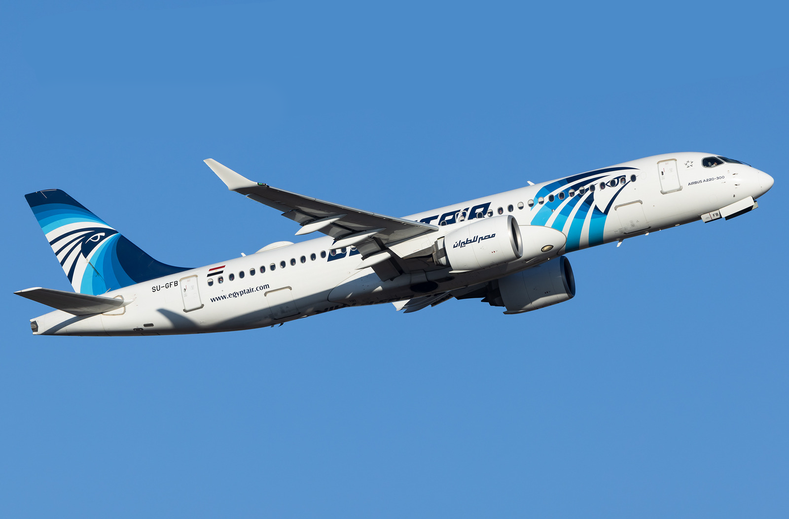
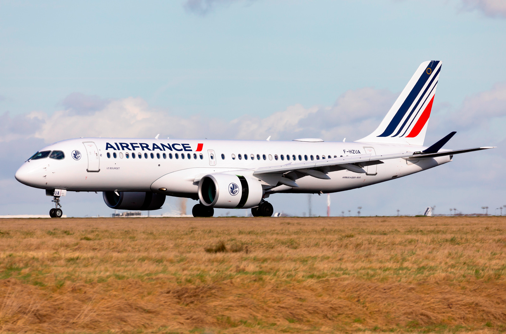

Let’s get this common misunderstanding cleared. The Bombardier CSeries and the Airbus A220 are the same aircraft program. It all started in March 2004 when Bombardier decided to go bigger than what it would usually manufacture. It went from regional and business jets to a narrow body airliner.

Korean Air Lines Bombardier CSeries CS300. Photo: Junha Park-Korea Aero Photos via planespotters.net
In January 2007, Bombardier confirmed it would continue work on its CSeries Aircraft Program. Soon, airlines like Lufthansa and Qatar Airways showed interest. In July 2008, at the Farnborough Airshow, Bombardier had formally launched its aircraft. It would have a fuel efficiency rate of 2 liters per 100 kilometers per passenger, which would go on to be quite better compared to its rival, the Embraer EJet E2-195.
In March 2009 Bombardier re-named the aircrafts CS100 and CS300 from C110 and C130. After suffering a bunch of supplier related issues, the aircraft finally took its first flight on the 16th of September 2013 from Mirabel Airport, Canada. However in May 2014, one of the four FTVs (Flight Test Vehicles) suffered an engine failure and flight testing was suspended till an investigation had been carried out. Flight Testing resumed in September 2014.

EgyptAir Airbus A220-300. Photo: Wolfgang Kaiser via planespotters.net
As February 2015 came by, the FTVs had accumulated a total of over 1,000 flight hours and a week later the CS300 prototype took its maiden flight. All was going well. Bombardier presented the CSeries aircrafts at the 2015 Paris Air Show. Bombardier soon disclosed in August 2015 that the CS100 had completed more than 80% of its certification tests and two months later the world would see the CS100 complete its certification program. A week later, FTV8 which was a CS300 made its maiden flight out of Mirabel, Canada.
The CS100 had received its type certification from Transport Canada, FAA and EASA by June 2016 and its bigger brother would do so by October of that very year. They received a common type rating in November 2016, allowing pilots to train and qualify for flying on both the aircrafts interchangeably.
In April 2016, Bombardier recorded a firm order of 75 CSeries Jets from Delta. Boeing filed a petition for dumping them at $19.6m each, below their $33.2 production cost. USITC had findings that proved that the US Economy could be threatened by the sales of the Bombardier CSeries Jets. However, soon in January 2018, it ruled that US Industry was not threatened and no duty orders would be imposed on Bombardier. Boeing refused to appeal the ruling but that was not the end of the chain of events it had started. Bombardier had considered a partnership of the CSeries Jets with Airbus. Alain Bellemare said that it would take the CSeries Program to new heights.

Air France Airbus A220-300. Photo: Gilles astre via planespotters.net
The partnership took effect from July 2018 and the program was renamed to A220. Meanwhile, back at its factory Bombardier had been successful in delivering 7 aircrafts to both of its launch customers - Swiss and airBaltic in 2016. It had increased by 10 aircrafts the next year, although its goal for 2017 was about 30 aircrafts. The production rates began to climb rapidly as Airbus took control with a total of 33 in 2018 and 48 the following year. As the COVID-19 pandemic struck and resulted in the majority of aircrafts around the world being grounded, demand slowly moved from long haul to short haul aircrafts. The Airbus A220 was just at the right place at the right time. Airbus expected it to reach a production rate of 5 aircrafts per month and could see it rise to 6 crafts every month in early 2022, which would result in an estimated production of more than 70 aircrafts in 2022 alone.
As of today, 8 in 10 A220s flying are A220-300s and the rest are its smaller brother. Although there are mixed opinions from various airlines, av-geeks and airplane manufacturers, according to reports Bombardier might be considering a bigger brother of the already existing -100 and -300. This stretched 150 seater variant, known as the Airbus A220-500 would also be an excellent replacement for Airbus’ existing line of short haul aircrafts.